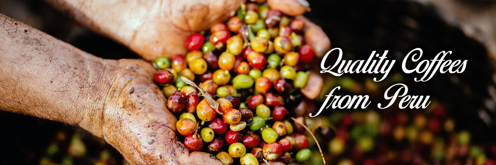

|
||||||
|
|
|
||||
|  | ||||||
Long Blackจะคล้ายกับอเมริกาโนแต่เป็นการทำขั้นตอนสับกัน จะใส่น้ำร้อนในแก้วก่อน แล้วค่อยสกัดช็อต Espresso ท็อปที่ด้านบน ทำให้ Long Black จะมี Crema เป็นฟองครีมสีน้ำตาลที่ลอยตัวอยู่ด้านบนของกาแฟ และมีกลิ่นหอมของกาแฟที่ชัดเจนกว่า |
|||
Latteเป็นการผสมผสานกันของ ช็อต Espresso และนมสดในปริมาณที่เยอะ 2 ใน 3 ของแก้ว ด้านบนอาจจะมีฟองนมเล็กน้อย รสชาติกาแฟจะออกมามีความหอมกาแฟ เข้มเบาๆ นุ่มละมุน |
|||
Espressoเป็นกาแฟดำที่เข้มที่สุด เป็นจุดเริ่มต้นของกาแฟทุกแก้ว จะถูกเสิร์ฟในแก้วกาแฟร้อนที่เล็กๆ เพราะเป็นการดื่มช็อตเอสเพรสโซ่สกัดออกมาจากเครื่องชงกาแฟแบบเพียวๆ ด้านบนของแก้วจะมีครีมฟองกาแฟสีน้ำตาลทอง ที่ลอยเป็นชั้นอยู่บนตัวกาแฟ |
|||
 |
Cappuccinoส่วนผสมหลักๆ คือ ช็อต Espresso ผสมกับ Steamed Milk หรือ นมร้อน เล็กน้อย ท็อปด้านบนด้วยฟองนมตีละเอียด จะมีความเข้มกว่า Latte แต่จะนุ่มละมุนขึ้นเมื่อดื่มพร้อมฟองนม |
||
Mochaกาแฟที่เกิดจากการผสมผสานของ ช็อต Espresso, Steamed Milk และ ช็อกโกแลต หรือ Mocha Syrup โดยทั่วไปจะใช้ Dark Mocha Syrup ให้อารมณ์ใกล้เคียงเครื่องดื่มโกโก้รสกาแฟ กลิ่นหอมดื่มง่าย |
|||
 |
Americanoเป็นการเทกาแฟ Espresso 1 ช็อต ตามด้วยน้ำร้อน หรือน้ำธรรมดา (ในส่วนของเมนูเย็น) ในอัตราส่วน 1:2 ซึ่งจะทำให้ได้กาแฟ Espresso ที่เจือจางลง เป็นกาแฟดำที่มีเพียงรสชาติกาแฟ และมีแคลอรี่ต่ำ |